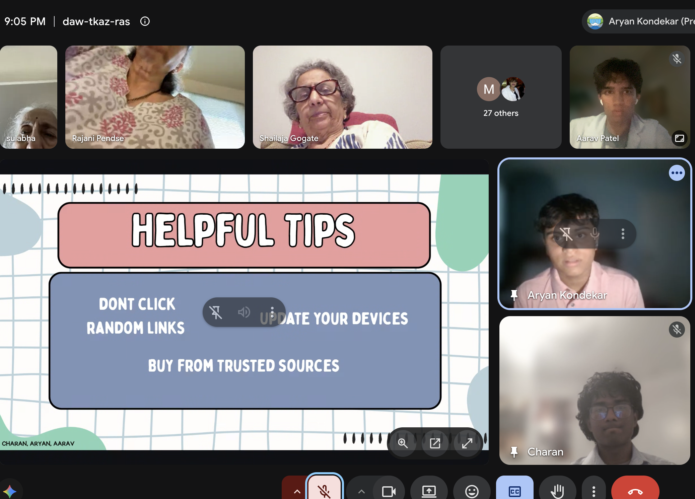
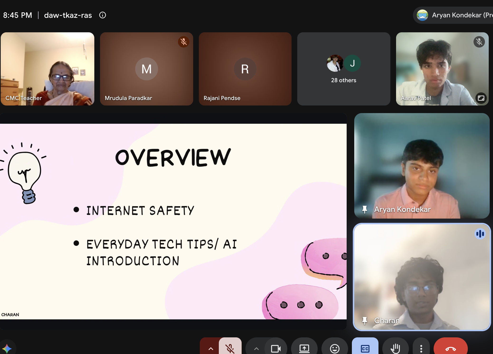

Online workshops, for when getting out isn't easy.
The same patient, one-on-one teaching, over a video call from home. Built around what older adults actually find hard about technology.


Slower pace. Plain words. Nobody rushed.
Online learning can feel intimidating when the tools themselves are the problem. So every remote session is planned around that: slower pacing, plain-language instructions, and a volunteer who stays on the call until you feel confident, not until the clock runs out.
Sessions run on Zoom or Google Meet with live screen sharing, so you see exactly what to tap or click and can ask the moment something is unclear.
Family is always welcome. Many of our best sessions happen with a grandchild or adult child sitting alongside, who can help again after we hang up.
How a session works
- We match you with a volunteerBased on what you need help with and when you're free.
- A quick test callWe check your camera, microphone, and screen sharing first, so there are no surprises.
- Live, one-on-one teachingStep by step, repeating and slowing down as often as you like.
- A written recapAn emailed, large-print cheat sheet of exactly what we covered.
- Free follow-upStuck later? Message us and we'll get back on a call.
What we cover
Video calling family, texting and photos, avoiding scam calls and phishing emails, social media privacy, and setting up new devices.
No tech skills needed first
If you can answer a video call, we can teach you the rest. We'll download anything needed together.
Completely free
Like everything THHYE does: no cost, no obligation, and no sales pitch.
Know someone who would like a session?
Request one for yourself or for a parent or grandparent. We'll take it from there.